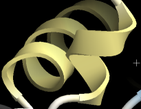
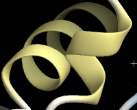
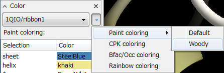
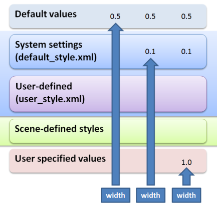

Style
スタイルについて¶
CueMol2では各レンダラーにさまざまなプロパティーがあって他の分子Viewerに比べて多彩な表現が可能なわけですが， 逆にたくさんありすぎて「いちいち設定するのが面倒」という問題がありました．
そこで，スタイルという概念を導入して，プリセット的にプロパティーを一括設定できるようにしました．
UIから操作できるスタイル¶
現時点(2.0.0.124)では，いくつかのスタイルがシステムで定義されており， それをUIから選んで使用することができるようになっています．
形状に関するスタイル¶
基本的に，スタイルはSceneパネルのレンダラーを右クリックして表示される コンテキストメニューから指定できます．
例えば，ribbonレンダラーを作成し， コンテキストメニューを表示させると，以下のようなのが出てきますが，

ここでRoundを選ぶと，ribbon rendererの形状が以下のように変化します．
-
Helix:
 →  -
Sheet:
 →
→ 
Ribbon以外にも，ballstick，atomintrなど他のrendererにも いくつかのシステムで定義されたスタイルが適用できるようになっています．
Paintに関するスタイル¶
Paint(塗り)に関するスタイルは，形状とは独立に定義されており， Colorパネルから指定できるようになっています．
まず，Colorパネルでスタイルを適用する対象のレンダラーを選び， 右横の▼ボタンを押すとドロップダウンメニューが出てきますが， そこから「Paint coloring」を選ぶと図のようにプリセットのスタイルが選択項目として出てきます．

現時点ではDefaultとWoodyしかありませんが，Woodyに変えるとCueMol1のデフォルトの 着色であった植物風（？）の着色に変化します．
→

スタイルが効かない！？¶
以上のように一括して指定できるスタイルですが， いろいろいじっていくうちに， スタイルを指定したのに，場合によっては無視される， という状況が起こるかもしれません．
これは，詳しくは下記の概念的な話で説明していますが， ユーザ指定値でスタイル値が上書きしてされてしまっているためです．
ともかくもスタイルを生かしたかったら， プロパティー設定ダイアログにある Reset all to defaultボタンを押してください． ただしもちろん，ダイアログから個別に指定した値は消えてしまいます．

あるいは上の図のように，プロパティ設定ダイアログのGenericタブには， 値ごとにdefaultというチェックボックスがあり， これをONにすることで値をデフォルトに戻す（すなわちスタイルが効くようにする）ことも可能です．
概念的な話¶
プロパティーのデフォルト（既定）値¶
CueMol2のレンダラーなどにはプロパティ（名前と値の組）がありますが， 多くのプロパティーにはユーザが特に値を指定していない場合に適用される， デフォルト値というものが存在します．
このデフォルトの値はCueMol2のソースコードレベルで決まってしまっているため， 後から変更することはできません．
デフォルト値とスタイル¶
一方で，レンダラーにスタイルを適用すると， デフォルト値がスタイルで定義されている値に置き換わります．
これを模式的に表した図が，以下になります．

例えば図のwidthの場合， スタイルを全く適用していない場合は， 左側のようにDefault valuesにある0.5という値が使用され， その値に応じて表示がおこなわれます．
さらに，（システムで定義されている）スタイルを指定した場合， 中央のようにSystem settingsにある0.1という値が使用され， デフォルト値0.5は無視されるようになります．
さらに，プロパティー設定ダイアログで直接値を指定すると(この場合は1.0を指定している)， 右側のようにUser specified valuesが使用され， デフォルト値(0.5)，スタイル定義値(0.1)ともに無視され， ユーザ指定値が最優先されるようになります．
システムスタイルの定義ファイル¶
システム定義のスタイルは，Windowsでは
<CueMol2フォルダ>\data\default_style.xml
（CueMol2フォルダは，CueMol2インストール先で，たとえばC:\Program Files (x86)\CueMol 2.0など） にあるシステムのスタイル定義ファイルに記述されています．
MacOS Xの場合は，CueMol2.app内にある
<CueMol2.app>/Resources/data/default_style.xml
にあるため，Finderなどからは直接アクセスできませんが， ターミナルなどから見ることが可能です．
この内容を編集すれば新たなスタイルを追加できるわけですが， このファイルはインストール時にインストーラーが上書きして消してしまうため 直接編集はお勧めできません．
一方，上の概念図のようにUser-defined, Scene-definedという層がありますが， 今後，ユーザインタフェイスからこれらのレベルでユーザーがスタイルを定義し， 利用できるようにしていく予定です．